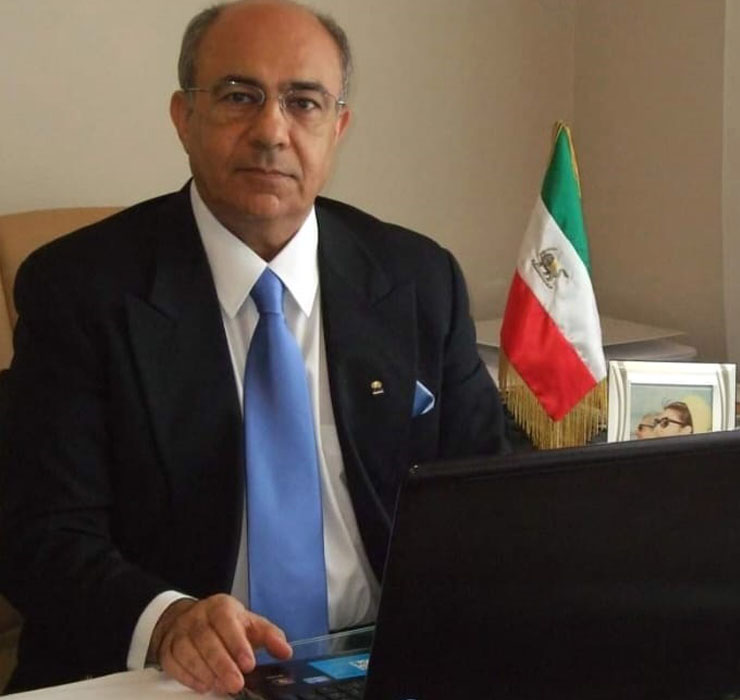
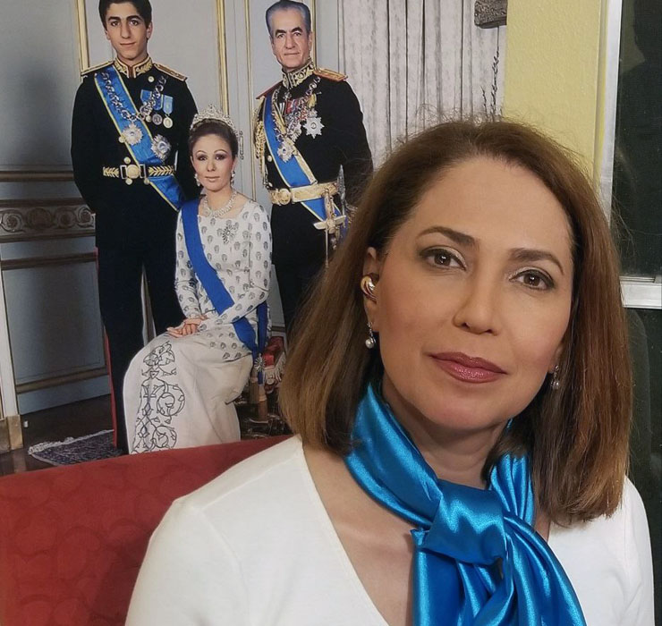
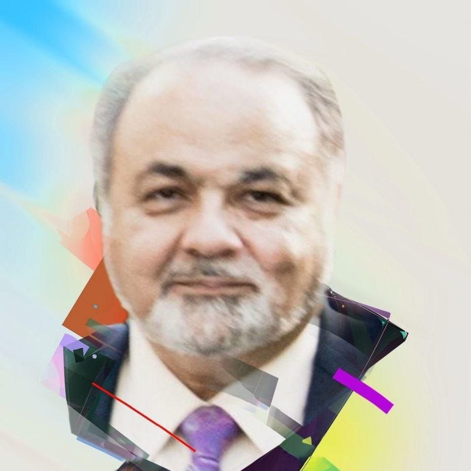
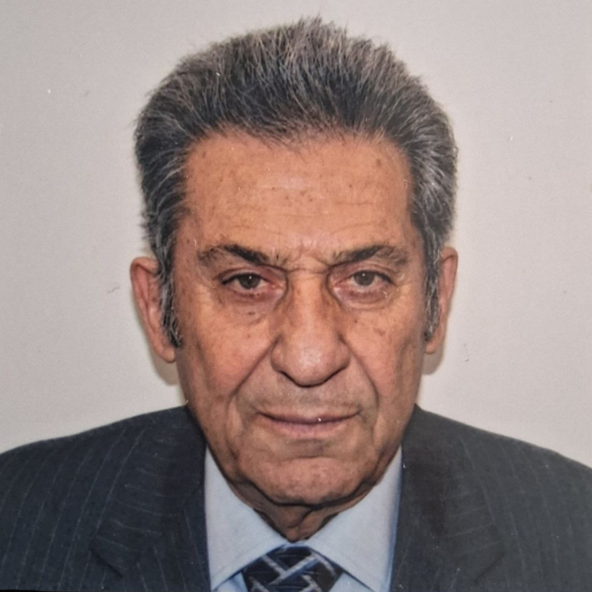
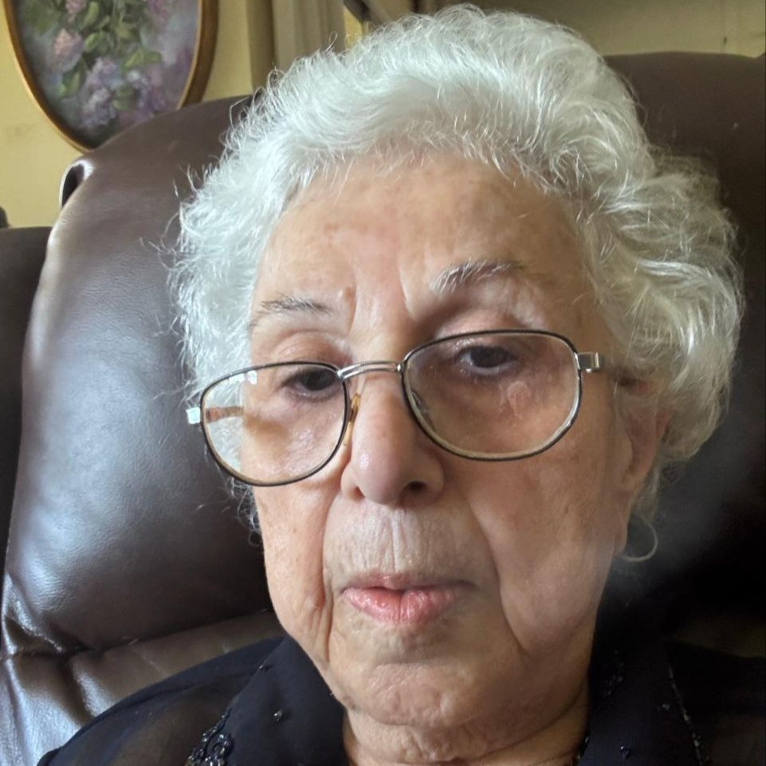
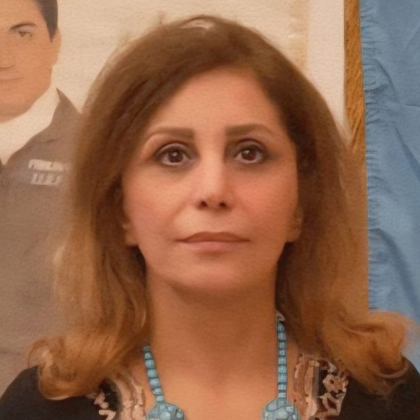
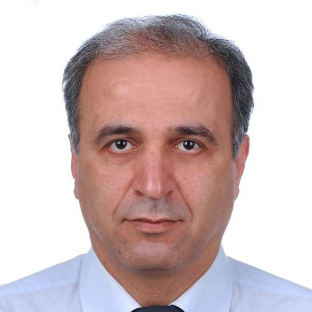
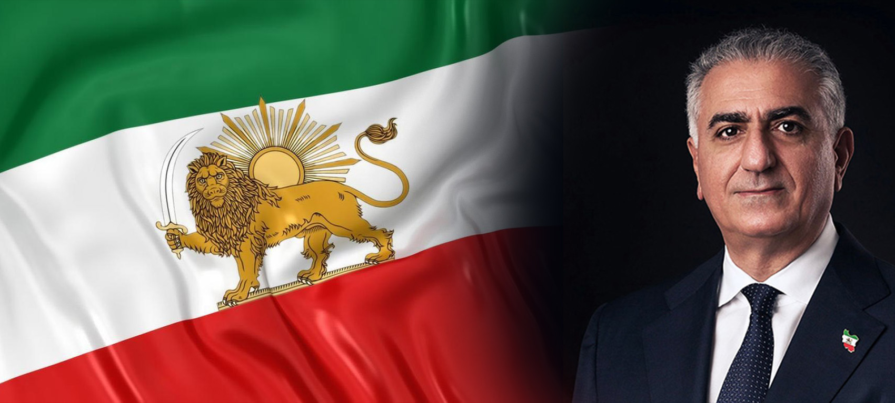
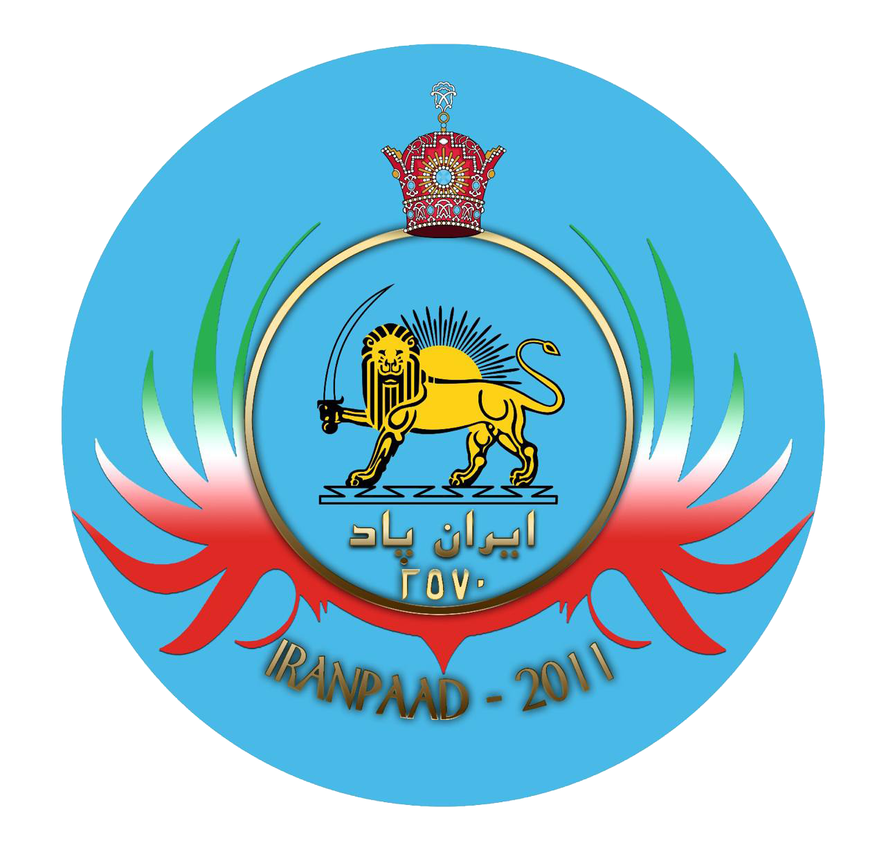

Overthrowing Tyranny.
Restoring Iran.
Iran Paad is a cultural and political organization dedicated to ending the rule of the Islamic Republic and restoring Iran's freedom, dignity, and standing among nations.
Goals & Vision
Overthrowing the occupying regime of the Islamic Republic, and then restoring Iran's honor and standing in the world.
Sécurité Nationale
Foundational security for a healthy society rests on seven pillars: economic, food, health, environmental, personal, social/cultural, and political.
Read moreFriendship with All Nations
Friendly, good-neighborly relations with every neighboring state, and friendly economic, political, and cultural ties — grounded in mutual respect — with every nation on earth, regardless of political or economic creed. A union of nations sharing the Persian language and culture.
État-providence National
A welfare state secures the economic, educational, and health-related wellbeing of its people through equal opportunity, fair distribution of wealth, and responsibility for those in need.
Read moreOverthrow of the Islamic Republic
The regime installed in Iran in 1979 through foreign conspiracy is a corrupt structure without competent leadership — and one the Iranian people have consistently rejected.
Read moreParoles du Dr Saeed Ahmadi
Commentary and analysis from Iran Paad's spokesperson on the regime, the region, and the road ahead.
The Beginning of Another War — Collapse Is Near
The Hyenas' Battle for Power
Aban, Month of the Kings
Directors & Members of Iran Paad

Dr Saeed Ahmadi
Organization Spokesperson

Ms. Irandokht Keymanesh
Deputy of Iran Paad

Dr. Bozorgmehr Vaziri
Activist and Political Organizer

Colonel Hassan Jalali
Activist and Political Organizer

Ms. Pari Sabahat
Activist and Political Organizer

Ms. Pourchista Jowkar
Activist and Political Organizer

Dr. Sina Rahmati
Activist and Political Organizer
Dr. Hossein Shokouh Amiri
Physician and Political Activist
Dr. Niki Jalisi
Activist and Political Organizer
Statements & Remarks of Crown Prince Reza Pahlavi
Iran's Immortal Guard: You Are Not Alone
November 2, 2025Expanding Small Resistance Cells for the Final Battle

Frequently Asked Questions
My activities are based on a precise, defined strategy built on five main pillars: maximum support for the struggle of the Iranian people; maximum pressure on the Islamic Republic; maximum defection from the regime; organizing and mobilizing Iranians abroad to influence public opinion and the policymakers of their host countries; and offering a political and economic vision for the transition period and Iran's reconstruction.
Strategically, these activities fall into two categories: those focused on the current phase — the struggle until the fall of the Islamic Republic — which are largely defined under the first four pillars; and those focused on establishing a national government and the transition to democracy the day after victory, which fall under the fifth pillar.
On necessity: the model of change I have in mind relies on the strength of the Iranian people and is based on a national revolution. In such a model, the immense force of the people, confronting hundreds of thousands of the regime's armed forces, succeeds only when at least part of the military, law enforcement, and security forces either join the people or declare neutrality.
On this basis, while I emphasize the right of every victim of the regime to seek justice, I have always tried to distinguish between seeking justice and seeking revenge. Establishing the truth about all of the regime's crimes, and addressing the cases of human rights violators and perpetrators of crimes against humanity, must happen through a transparent process of transitional justice.
As for feasibility: it's important to recognize the difference between defection actually occurring and it becoming public and open. In regimes like the Islamic Republic, premature public dissent among military and security personnel can be life-threatening. So those who are disillusioned or opposed typically remain within the system until the last moment, working to undermine it from within. Developments in recent years — and especially recent months — confirm that defection is already underway, even if it has not yet reached its tipping point. To reach that point, we need to keep increasing pressure on the regime while offering a clear path out for those within it who wish to break away. Both are necessary, and each reinforces the other.
First, this military conflict is Khamenei's war — not a national, patriotic struggle to defend our homeland. For decades, the Islamic Republic has planned and worked toward a war with Israel aimed at that country's destruction, squandering billions of dollars of the Iranian people's wealth in the process. The cost of this warmongering and unconditional support for terrorist groups in the region has been the spread of poverty and misery in Iran. For years I warned Western governments that the solution to the Islamic Republic problem was not appeasement aimed at changing or containing this rogue regime's behavior — but rather that the approach that could actually prevent war once and for all was maximum pressure on the regime combined with maximum support for the Iranian people's struggle for freedom and democracy. What we see today, with the region on the brink of a larger military conflict, is the result of years of appeasement and concessions to the regime.
Throughout the past 45 years, I have always emphasized that the real force for change in Iran is the strength and will of the Iranian people. In our struggle to overthrow the Islamic Republic, we have never counted on the intervention of any foreign power or country, nor have we waited for anyone's green light. I have also always said that if foreign countries support the Iranian people and their struggle to overthrow this regime, they lower the cost of change.
With this outlook, I have never sought regime change through foreign military attack or invasion. Now that Khamenei has put Iran at risk of war, my longstanding message to Iran's armed forces — to separate their path from the Islamic Republic — carries even greater importance and urgency. As long as the Islamic Republic rules Iran, the danger of war will not be lifted from the country; it will only grow with each passing day. Iran's military personnel must not sacrifice themselves, their families, and Iran for Khamenei's apocalyptic ideology and his regime.
Déclarations d'Iran Paad

Événements Quotidiens
News and events in and around Iran, curated by Iran Paad.